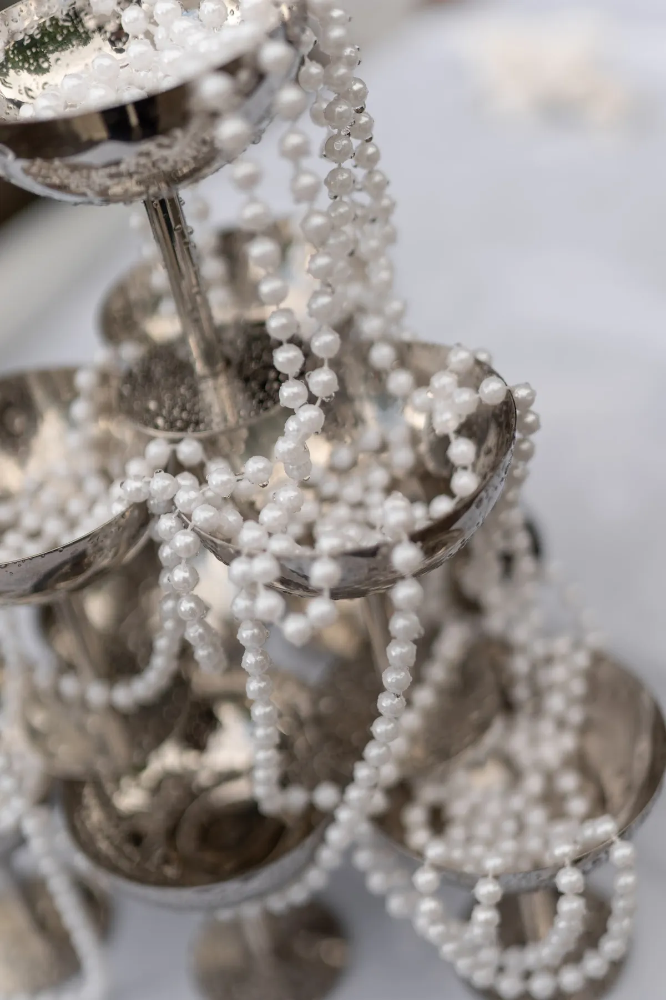
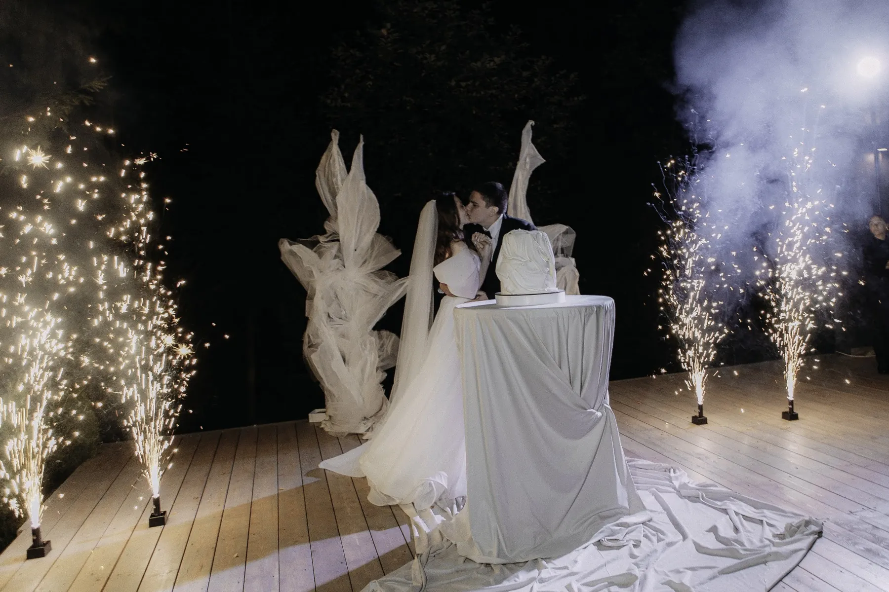

Белая свадьба — самая элегантная и одновременно самая сложная палитра: без фактур и света белый зал выглядит плоским. Рассказываем, как сделать белый декор живым, на примерах наших свадеб.
Оттенки белого
Белый бывает разным: холодный чисто-белый, айвори, молочный, кремовый, жемчужный. Сочетание двух-трёх оттенков даёт глубину: например, белые цветы на фоне драпировки цвета айвори. Главное — не смешивать холодный и тёплый белый случайно.
Фактуры вместо цвета
Когда цвет один, работают фактуры: шёлк и лён, гладкие каллы и пышные розы, стекло и жемчуг, тонкая гипсофила и плотная драпировка. Чем больше разных фактур в одной гамме, тем богаче выглядит белый зал.


Зелень и свет
Зелень — естественный партнёр белого: она добавляет жизни и не нарушает палитру. Вечером белый декор раскрывается со свечами — тёплый свет делает его мягким. В тёмном зале белые цветы выглядят особенно графично.


Белые свадьбы, которые мы оформляли
«Белый сад под стеклом» — белые цветы, зелень и айвори под стеклянной крышей. «Шёлк и жемчуг в саду» — кремовая драпировка и нити жемчуга. «Белый шатёр и зелёные яблоки» — белая драпировка шатра и свежий зелёный акцент. «Белые цветы в тёмном зале» — белое на тёмном фоне.
Как заказать
Мы оформляем белые свадьбы в Москве и Подмосковье. Расскажите о площадке — предложим, как сделать белый декор живым, и посчитаем смету. О выборе палитры — в статье про цвет свадьбы.
Частые вопросы
Не будет ли белая свадьба скучной?
Нет, если работать с фактурами, оттенками белого, зеленью и светом.
Какие цветы выбрать для белой свадьбы?
Сочетание разных форм: пышные розы, графичные каллы, воздушная гипсофила, зелень.
Можно ли добавить в белую свадьбу цветной акцент?
Да, один акцент — зелень, голубой или бордо — делает белую палитру выразительнее.